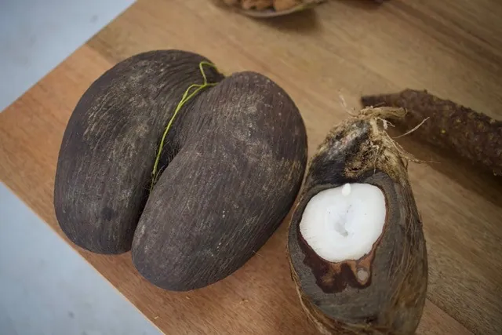
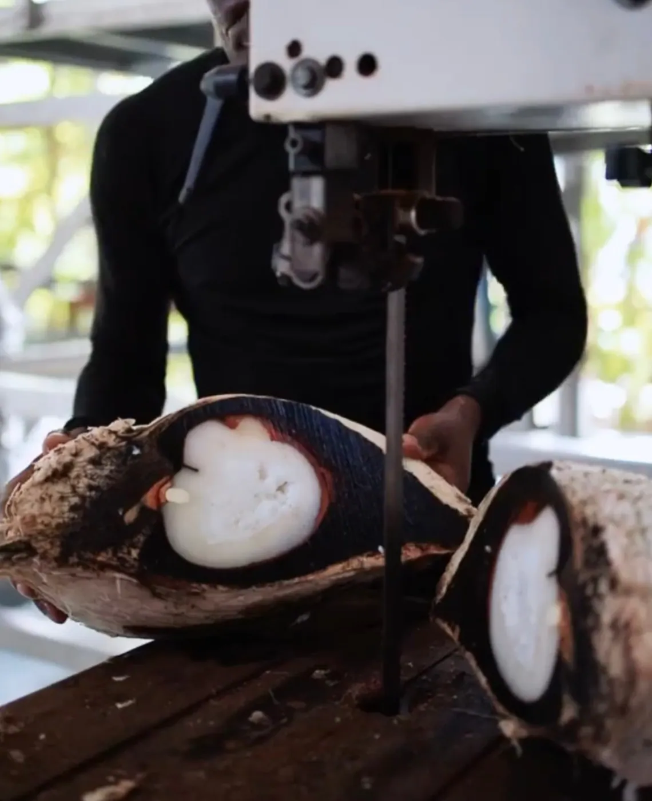

Is the Coco de Mer Eatable?

What does the Coco De Mer taste like?
The Coco de Mer, or Lodoicea maldivica, is a captivating and enigmatic palm tree native to the Seychelles, renowned for its enormous seeds that are the largest and heaviest of any known nut. While its dramatic appearance and intriguing legends draw much attention, many wonder about its edibility. Let’s dive into the details of the Coco de Mer’s culinary potential and its historical uses, and the ultimate question, is the coco de mer eatable?

Young Nut Consumption
Traditionally in the Seychelles, people have harvested the young Coco de Mer nuts when they are between 1 and 2 years old. At this stage, the nut is soft and gelatinous, reminiscent of the red coconut jelly. This texture makes it quite different from the mature, hardened state of the nut. The flavor of the young Coco de Mer is notably bland, somewhat akin to rice pudding. It is unique in that it contains neither oil nor sugar, distinguishing it from other nuts.
Maturation Process
As the Coco de Mer matures, it undergoes a fascinating transformation. The process typically spans between 6 and 10 years. During this time, the plant absorbs minerals from the virgin soils of Praslin and Curieuse Island, where the trees predominantly grow. This mineralization gradually hardens the nut’s kernel, eventually rendering it as solid as rock. In its mature state, the Coco de Mer no longer contains water and its interior resembles a soft heart, which has earned it the poetic title of "the heart of the goddess."
Historical Consumption and Modern Restrictions
Up until the 1950s, the edible part of the Coco de Mer was consumed, often paired with honey or sweet liquors. The flavor of the mature nut kernel was reported to have subtle notes, with some describing it as akin to chestnut or even plain flour or cassava root. A mild cheese-like aftertaste was also noted. However, these practices have since ceased.

The Seychellois government, concerned about overharvesting and the risk of poaching, has since outlawed its consumption. The only parts of the nut now regularly handled are the kernels, which are removed by the Island Scent company and primarily exported to Asian countries, where it is a traditional ingredient in soups and desserts.
While the Coco de Mer does have a history of being consumed in its young, soft form, it is now mostly appreciated for its unique properties and symbolic significance rather than as a culinary ingredient. The mature nut, with its hardened kernel and subtle flavors, has been largely relegated to the realms of tradition and legend, adding to its mystique and allure.